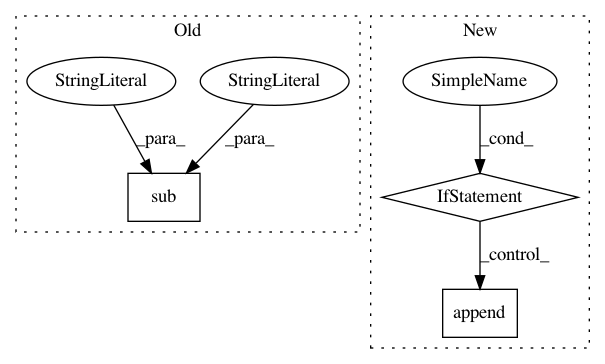

bd1e1471f064ffc5a40e729d82bfcb9fce73e9e1,pysos/sos_step.py,Base_Step_Executor,get_step_signature,#Base_Step_Executor#,377
Before Change
else:
result += statement[1] + "\n"
result += self.step.task
return re.sub(r"\s+", " ", result)
def log(self, stage=None, msg=None):
raise RuntimeError("Please redefine the log function in derived step executor.")
After Change
if "__accessed_vars__" in env.sos_dict:
for var in sorted(env.sos_dict["__accessed_vars__"]):
// var can be local and not passed as outside environment
if var in env.sos_dict:
// FIXME: this would not work for function defintion etc
env_vars.append("{} = {}\n".format(var, env.sos_dict[var]))
def get_tokens(statement):
return [x[1] for x in generate_tokens(StringIO(statement).readline)]
tokens = []
In pattern: SUPERPATTERN
Frequency: 3
Non-data size: 3
Instances
Project Name: vatlab/SoS
Commit Name: bd1e1471f064ffc5a40e729d82bfcb9fce73e9e1
Time: 2016-09-28
Author: ben.bog@gmail.com
File Name: pysos/sos_step.py
Class Name: Base_Step_Executor
Method Name: get_step_signature
Project Name: ijmarshall/robotreviewer
Commit Name: 46c648c38a32af8431c76699e36000848b574d95
Time: 2016-08-18
Author: mail@ijmarshall.com
File Name: robotreviewer/textprocessing/pdfreader.py
Class Name: PdfReader
Method Name: parse_xml
Project Name: ijmarshall/robotreviewer
Commit Name: b5a9d8e3c23b73f0050cff9f426260bd709d0a75
Time: 2016-08-18
Author: mail@ijmarshall.com
File Name: robotreviewer/textprocessing/pdfreader.py
Class Name: PdfReader
Method Name: parse_xml